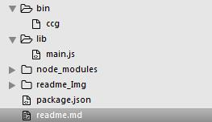
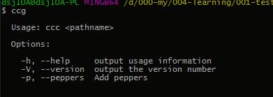

1.项目说明：
- 此demo用于简单进行npm全局命令行工具的制作，用到commander
- commander官方解释：Node.js命令行界面的完整解决方案，受Ruby的指挥官的启发。
- 官方学习地址
- 项目的功能基本满足简单全局命令行工具的开发使用，想制作复杂的请忽略此文。
2.start
2.1 基本目录：

2.2 目录说明：
- bin目录下有ccg文件，此文件没有后缀名，是命令行工具的入口文件。（ccg是我自己随便来的名字，制作工具时按照自己的需求进行设置名字。）
- lib目录下有main.js，此文件为主入口文件所依赖的基础模块。
- package.json为生成工具前的配置文件。
- 依据自己的需求进行docs、test和readme.md文件的补充。
2.3 bin/ccg文件：
#!/usr/bin/env node
/**
* Module dependencies.
*/
// 入口文件可以没有后缀名，里面用commaner，lib的索引
var program = require('commander');
// 读取package.json里面的版本号
var version = require('../package.json').version;
// 引入自己写的模块
var read = require('../lib/main');
program
// 命令行工具注册版本号
.version(version)
// 命令行工具注册命令
.option('-p, --peppers', 'Add peppers')
// 使用方法的提示
.usage('<pathname>')
// 解析路径上有用的参数，非命令选项
.parse(process.argv);
// 上面所有注册所有的命令和用法进行提示说明，在没有按照命令和使用说明--使用时
if (program.args.length === 0) {
program.help();
}
// 执行-p, --peppers命令的执行函数
else if(program.peppers) {
console.log(' - pineapple');
}
// 按照使用方法进行 文件路径为参数的执行函数
else {
read(program.args[0]);
}
- program.help()的提示：

2.3 lib/main.js文件：
#!
var fs = require('fs');
module.exports = function (path) {
/* body... */
console.log(fs.readFileSync(path, 'utf-8'))
}
2.3 package.json文件：
#!
{
"name": "013-test",
"version": "1.0.0",
"description": "",
"main": "./bin/ccg",
"bin": {
"cc-g": "./bin/ccg"
},
"dependencies": {
"commander": "^2.9.0"
},
"devDependencies": {},
"scripts": {
"test": "echo \"Error: no test specified\" && exit 1"
},
"author": "cc",
"license": "MIT"
}
2.4 npm install . -g：
- 发布之前一定要本地全局测试。
3.总结
- 文件操作的基础模块那里使用相对路径：
fs.readFileSync(path, 'utf-8')，就是相对于全局命令行工具所在的目录的相对路径。